Глава 11
ЗАДАЧНАЯ КОМПОЗИЦИЯ В США
Первые американские конкурсы. Кук. Чини. Сборник "Американские шахматные орешки".
Лойд. Его творческие взгляды и книга "Шахматная стратегия".
Шинкман. Двухходовая задача в США
Рассказать о задачной композиции в США относительно легче, чем об эволюции ее в других странах. В 1942 г. вышла обобщающая работа по истории шахматной задачи в США (53), аналогичной которой нет ни в Англии, ни в Германии, ни во Франции. В этой двухтомной книге обстоятельно, в живой форме рассказано о всем пути развития американской задачи и лучших ее представителях.
Начало шахматной композиции в США совпадает с зарождением американской шахматной прессы. Ранние задачи появились в первом шахматном отделе, возникшем в 1845 г. при нью-йоркском издании "Спирит оф таймс".
Попытки издания шахматных журналов, предпринятые в гг., оказались неудачными, но "Чесс мансли", основанный в 1857 г., просуществовал пять лет.
Это время — середина 50-х годов — было порой значительного подъема шахмат в США, захватившего и область композиции. Подъем этот был непосредственно связан с триумфом П. Морфи. В 1857 г. в связи с международной выставкой в Нью-Йорке был созван I Американский шахматный конгресс. К этому событию был приурочен и первый в Америке международный конкурс составления задач. За год до того состоялись ранние национальные конкурсы составления задач, в которых дебютировал и первенствовал Лойд. В дальнейшем такие конкурсы, организуемые отделами периодических изданий, стали проводиться регулярно — до начала гражданской войны (1861 r,)t когда в шахматной жизни США наступил застой.
Задача № 000 принадлежит одному из видных американских композиторов того времени Т. Брауну,
№ 000
Т. Браун "Нью-Йорк клиппер", 1859 г. I приз
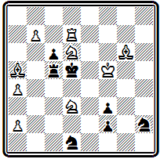
Мат в 3 хода
Вступительный ход 1. Kpg 5, подготавливающий ответ на имеющимся в начальном положении шах 1... Kpd 4+ предоставляет черному королю второе свободное поле и допускает новый шах 1... Кре6+. В ответ на оба шаха следует 2. Kf 5(+) с правильным матом в случае 2... Кр: d 7 3. К:с5#. Интересен дополнительный вариант 1... Л:а5 2. К b 5+ Крс4 3. Cf 7# с критическим ходом черной ладьи и ее последующим перекрытием белым конем.
Яркой фигурой начального периода американской композиции был молодой талантливый проблемист Д. Чини. Он занимался составлением задач всего пять лет — в 1861 г. Чини погиб на фронте гражданской войны, но тем не менее оставил в композиции значительный след. Задачи Чини отличаются по тому времени легкостью построения и интересной, четко выраженной стратегической идеей. По стилю они близки к задачам Эрлена.
В примере № 000 осуществлена идея, которая в дальнейшем получила название темы Чини — Лойда. Она относится к категории идей, порожденных "индийской задачей".
№ 000
Д. Чини "Бруклин стандарт", 1860 г.
Мат в 3 хода
В ней мы находим и критический ход белой фигуры, и выключение этой фигуры на критическом поле, в результате которого получается распатование черных, но, в отличие от индийской темы, выключенная белая фигура дальнейшего участия в игре не принимает, мат дается другой фигурой. Первый ход 1. Са8 перебрасывает слона через критическое поле b7, на котором он после хода 1... fg, ставящего черных в положение пата, выключается белым королем 2. Кр b 7. Черный король получает выход 2... Kpd 5, но теперь у белых нет мата Андерсена, как в "индийской задаче", а следует мат ладьей 3. Л d 3#. На 1... f 4 решает 2. Се4.
Эта же идея была представлена Лойдом в следующей его задаче -
С. Лойд "Кливленд лидер", 1876
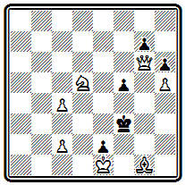
Мат в 3 хода
1. Ca7 f4 2. Кb6, 1... Крe4 2. Фg3.
В задаче № 000
№ 000
Д. Чини "Сэрка", 1859 г.
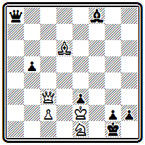
Мат в 3 хода
белые ходом 1. Ф h 8, создающим угрозу 2. Ф: h 2#, заставляют черных превращать пешку 1... h 1Ф. Теперь они могут использовать блокирование поля h1 эффектным маневром 2. Фа1, после которого неизбежен мат 3 . Kf 3.
Очень оригинальна комбинация, осуществленная в позиции № 000.
№ 000
Д. Чини "Американские шахматные орешки", 1868г.
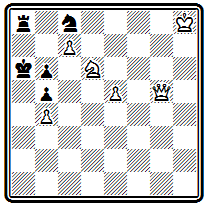
Мат в 3 хода
Белые могут легко заматовать черных по вертикали "а". Но ... черные сами грозят шахом по восьмой горизонтали. Поэтому белые должны стремиться к заветной вертикали, одновременно защищая собственного короля: 1. Ф g 8 — шахов нет, а грозит мат 2. Фа2 #. Черные могут защищаться, связывая белого ферзя уходом коня. Однако на 1... К: d 6( e 7) следует 2. Ф:а8#. Черные предупреждают это и играют 1... Ка7. После 2. Ф:а8 черным пат, но неожиданное 2. Ф b 8 создает позицию цугцванга. На 2... Ке6 проходит мат 3. с8Ф#, поскольку белый ферзь перекрыл ладью. Конь может парировать эту возможность, играя 2... Кс8, но тогда ладью перекрывает черный конь, ферзь оказывается развязанным и дает мат 3. Ф b 7#. Наконец, на взятие белого ферзя ладьей следует мат с превращением пешки в коня 2... Л: b 8+ 3. с b К # .
Пионером в разработке темы превращения пешки в легкие фигуры был другой видный американский композитор Ю. Кук.
Задача № 000 служит примером ранних работ в этой области.
№ 000
Ю. Кук "Иллюстрейтид лондон ньюс", 1855 г.
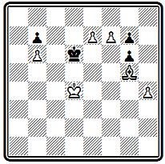
Мат в 3 хода
Решение ее несложно, но остроумно: 1. e 8 C Кре6 2. f 8 C Kpf 5 3. Cd 7 #.
Приведем еще один пример из творчества Кука (№ 000), где он развивает индийскую тему, представляя ее в двух вариантах.
№ 000
Ю. Кук "Американские шахматные орешки", 1868г.

Мат в 4 хода
В разветвлении 1. Л f 6 а 6 2. Са7 е2 3. Л b 6 белый слон делает критический ход по диагонали а7-g1 в одном направлении, а при 1... е2 2. Cg 1 а6 3. Л f 2— в другом. В обоих вариантах черному королю предоставляется выход на поле d4, после чего белая ладья вскрывает мат слоном и отнимает одновременно поле c3, играя соответственно 4. Л b3# или 4. Л f 3 # .
Кук был весьма продуктивным композитором и активным шахматным деятелем. Он явился одним из инициаторов издания первого сборника задач американских авторов. Уже в 1859 г. Кук совместно с Лойдом подготовил коллекцию из 1000 задач. Однако осуществить издание удалось только в 1868 г., зато объем сборника увеличился больше чем вдвое. В сборнике "Американские шахматные орешки" (54) представлен 231 композитор. Задачи ведущей группы проблемистов того времени занимают свыше половины сборника. На первом месте С. Лойд — 353 произведения, далее Ю. Кук—326. Т. Браун — 229, Д. Чини—П — 84, К. Джилберг— 75, Д. Карпентер—64.
Знаменитый Сэмюэль Лойд не имел себе равных в американской композиции не только по числу представленных в сборнике задач, не только по исключительной продуктивности, но и по самому характеру своего творчества, по богатству и неисчерпаемому многообразию оригинальных замыслов.
Лойд начал составлять задачи в 1855 г. четырнадцатилетним юношей и развился в выдающегося композитора так быстро, что уже в 1857 г., когда стал выходить журнал "Чесс мансли". его пригласили редактировать отдел композиции. Лойд первенствовал на большинстве американских конкурсов, а в Нью-Йоркском конкурсе 1857 г. занял III место.
Успехи Лойда в последующих международных конкурсах невелики, да он и не особенно стремился в них участвовать. Лойд понимал, что его стиль решительно разнился от стиля ведущих европейских мастеров. Задачи американского проблемиста никак не соответствовали нормам и вкусам, господствовавшим в то время и разделявшимся судьями конкурсов. Если построить по годам кривую количества составленных Лойдом задач, то она будет иметь несколько пиков, соответствующих периодам подъема его активности. Первый пик относится к годам 1857—1859, когда он составил больше четверти всех своих задач, второй — к 1867—1868 и третий — к 1877—1878 гг. В дальнейшем активность его падает, хотя с несколькими задачами в год он продолжает выступать почти непрерывно до самой смерти, последовавшей в 1911 г.
Главная особенность творчества Лойда заключалась в том, что он чуть ли не в каждой задаче старался воплотить новую, оригинальную идею, был неутомим в изыскании все новых и новых замыслов и никогда не становился на путь повторения и шаблона. Его главным девизом всегда была оригинальность.
Уже в задачах, относящихся к раннему периоду творчества Лойда, мы находим большое количество ярких, разнообразных мыслей.
Вот позиция № 000
№ 280
С. Лойд "Сэтерди курир", 1855 г.
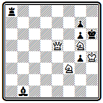
Мат в 3 хода
Белый ферзь должен освободить поле коню для создания угрозы 2. Ке5 и 3. Ке f 7 (: g 4) #. Однако от одной этой угрозы черные могут защищаться совместными усилиями ладьи и слона. Надо создать дополнительную угрозу, а заодно привязать черную ладью к восьмой горизонтали. Белые играют 1. Ф b 8 и создают угрозу 2. Kf 7+ При взятии ферзя 1 ... Л: b 8 проходит 2. Ке5, ибо черные потеряли теми. Ход ладьи с точки зрения координации сил для защиты был бесполезным. Ход 1... С f 5 защищает от 2. Ке5 (2... Се6), но проходит вторая угроза 2. Kf 7+ Kph 7 3. K 3 g 5#. На 1... gf проходит третья угроза 2. Ф: a 8 с неизбежным 3. Фh8#. Но это не все. У черных находится ответ 1... Са2, который защищает сразу от всех трех угроз. Что же делать белым — ведь других нападений нет. Оказывается, черный слон создал в своем лагере слабость, которую можно использовать. У ладьи отнято поле а2, и, пользуясь этим, белые красивым ходом ферзя в обратном направлении 2. Ф b 2 создают неотразимую угрозу мата королевской батареей 3. Kpg 3. Предельная экономия материала, активность всех фигур, включая короля, при очень скрытой и тонкой идее в главном варианте производят сильное впечатление.
То же можно сказать о задаче № 000.
№ 281
С. Лойд "Сэтерди курир", 1856 г. I приз
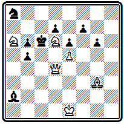
Мат в 4 хода
Белый ферзь на боевой позиции рядом с черным королем. Уводить его отсюда как будто бесцельно, надо подтягивать силы и вводить в бой слона. Это, действительно, так, но к цели ведет лишь 1. Ф g 1. Только этот нелепый, на первый взгляд, ход. лишающий ферзя всех преимуществ начальной позиции, решает задачу. Ферзь должен отступить, чтобы открыть путь слону, который затем проделает тот же путь в обратном направлении. Как бы черные ни играли, они бессильны воспрепятствовать этому плану: 2. С f 2, 3. С: b 6, 4. Фс5 #. Композиция Лойда воплощает ту же тему Тертона, что и приведенная выше задача № 66, с той лишь разницей, что там слабая фигура освобождала путь более сильной, здесь же наоборот— сильная фигура, ферзь, пропускает вперед себя слона. Такая разновидность темы была названа темой Лойда — Тертона. Следует отметить, что Лойд составил свою композицию независимо от Тертона, да и опубликовал ее лишь на месяц позже.
Композиция № 000, по признанию самого Лойда.— случайная находка.
№ 282
С. Лойд "Чесс Мансли", 1857 г. I приз
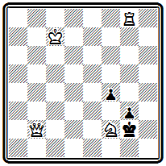
Мат в 3 хода
Между тем это одно из его самых известных произведении. В миниатюрной форме осуществлены четыре варианта с интересной разнообразной игрой. Пусть первым ходом объявляется шах 1. Kg 4+, Лойд этого не боялся и не считал слабостью задачи, зато в дальнейшем игра развивается очень тонко. На 1... Kph 1 белые жертвуют ферзя 2. Ф h 2+ и дают правильный мат: 2... gh 3. Kf 2#. На 1 ... Кр b3 следует тихая жертва коня 2. Kh 2 с угрозой 3. Л h 8# и далеким матом ферзем после 2... gh 3. Ф h 8#. При 1... Кр f 3 черные попадают в положение цугцванга после 2. Фс2; единственный ответ 2... g 2 блокирует поле у короля, и ферзь дает мат 3. Ф d 3#. Наконец, в случае 1... Кр f 1 решает далекий маневр ладьи 2. Ла8 с неизбежным 3. Ла1 #. Снова легкое, необычайно экономичное построение с богатейшим комплексом разветвлений.
Задача № 000 — снова в другом стиле.
№ 000
С. Лойд 1856
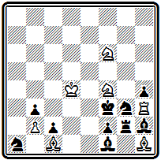
Мат в 14 хода
Белый король должен проникнуть на h4, но только по черным полям (если он станет на белое поле, то черные дадут шах слоном, сыграют f1Ф и развяжут узел фигур на королевском фланге) и притом таким образом, чтобы очередь хода оказалась за противником,— в этом случае на Cg1 последует Л:g3#. Однако нетрудно убедиться, что прямая попытка достичь цели ни к чему не приводит, так как в цугцванг попадут белые, а не черные. Выиграть темп можно лишь следующим оригинальным способом:
1. Kpd4- с 5! С h2-g1 2. Крс 5-b6 Cg1-h2 3. Kpb 6- a 7 Ch 2- g1 4. Кра7- а8!! (только здесь белый король обезопасен от шахов слоном)
4... Cg1 - h 2 5. Кра8- b 8! Ch 2- g1 6. Kpb8-c7 Cg1-h2 7. Kpc7-d8(d6) Ch2-g1 8. Kpd 8( d 6)- e 7 Cg1 - h 2 9. Kpe 7- f 8 Ch 2- g1 10. Kpf 8 -g 7 Cg1-h 2
11. Kpg 7- h 6 Ch 2- g1 12. Kph 6- g 5 Cg1 - h 2 13. Kpg 5: h 4 Ch 2- g1 14. Л h 3: g 3# или 13... С~ 14. Ch 1: g 2#.
Эту задачу Лойд составил, когда ему было всего 15 лет! Как и многие другие его находки, задача вызвала многочисленные подражания.
В подобном же стиле построена и проблема № 000, содержащая два симметричных варианта с яркой идеей.
№ 284
С. Лойд "Цинцинати газетт", 1859 г.
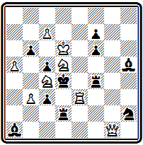
Мат в 3 хода
Первым ходом ферзь нападает на ладью f4 и предлагает себя в жертву обеим ладьям 1. Ф f 2. Беря ферзя, ладьи совершают критический ход, переходя через поле, на котором каждая из них на следующем ходу будет перекрываться собственным слоном. В самом деле, 1 ... Л f : f 2 2. Ке7 (с угрозой 3. Кс6#) 2... С f 3 3. Kf 5# с использованием перекрытия ладьи. Аналогично при взятии ферзя другой ладьей: 1... Л d : f 2 2. Ка3 ~ 3. К b 5# или 2... Се2 3. Кс2 # .
Подобные задачи (а их число можно значительно увеличить) показывают, что Лойд как бы шутя, между прочим, сделал много важных открытий в области стратегических идей, которые в дальнейшем прочно вошли в багаж современной тематики.
Лойд считал, что три хода являются нормальным и достаточным количеством для воплощения любой шахматной идеи. Очень редкие замыслы, по его мнению, получили лучшее представление с большим числом ходов. Позиции в два хода слишком легки, а в четыре — трудны для широкой массы шахматистов. Сам он всегда отдавал предпочтение трехходовкам. В сборнике его задач почти половина — трехходовки.
Тем не менее и в области двухходовки Лойд создал ряд выдающихся произведений. Задача № 000 является превосходным образцом двухходовки на цугцванг. В начальном положении трудно заподозрить, что у черных может не оказаться выжидательного хода.
№ 285
С. Лойд "Филадельфиа ивнинг бюллетин", 1858 г.
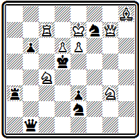
Мат в 2 хода
Однако после блестящего 1. Фа1, которым ферзь ставится в засаду, оказывается, что ладья привязана к защите двух полей а8 и е3, а ферзь скован охраной пунктов b6 и h1. Совсем отрицательно относился Лойд к многоходовкам. Он прямо писал о "причудах наших предков, сомнительные заслуги которых состоят в непомерном растягивании ходов". Сам Лойд многоходовок почти не составлял и весьма скептически относился к начавшемуся в начале
80-х годов развитию этого жанра. Об одной своей многоходовке -
С. Лойд "Сэтерди курир", 1856
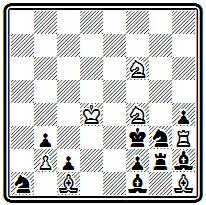
Мат в 14 ходов
он писал, что идея в ней по существу двух - или трехходовая, но он легко переделал ее в 14-ходовку "и не видит основания, почему бы чудище этого рода не довести до тысячи ходов". Король белых должен попасть на h4 в тот момент, когда слон черных стоит на h2. Идти король может только по черным полям, так как в противном случае черные освободятся, объявляя шах слоном f1; поэтому, чтобы выиграть темп, он должен "завернуть" на а8:
1. Крс5, 2. Кр b6 , 3. Кра7, 4. Кра8, 5. Кр b 8, 6. Крс7, 7. Kpd 8, 8. Кре7, 9. Kpf 8, 10. Kpg 7, 11 . Кр h6 , 12. Kpg 5 , 13. Kp : h 4 , 14. Л: g 3 #.
Будь в начальном положении ход черных, белый король мог бы двигаться к h4 без захода на а8 — это сокращает решение на несколько ходов. Признанным чемпионом композиторов европейского континента был Байер. Лойд пытался состязаться с ним на больших международных конкурсах, но неудачно. В Нью-Йоркском конкурсе 1857 г. посылка Лойда была оценена ниже посылки Байера. То же повторилось и в Парижском конкурсе 1867 г. И только в следующем Парижском конкурсе 1878 г. Лойду удалось взять реванш —он стал выше Байера. Оценивая теперь, через десятки лет, это соревнование двух титанов задачной композиции, нельзя сказать, что оценки судей были объективными и правильными. Они просто не могли понять своеобразие и необычность стиля Лойда.
Лойд выступил в Парижском конкурсе 1867 г. с посылкой под девизом: "Красота предпочтительнее трудности". Это было прямым вызовом Байеру, задачи которого отличались именно трудностью решения. В соответствии с условиями конкурса Лойд три задачи включил из числа ранее опубликованных. Вот эти произведения.
Позиция № 000 при внешней простоте содержит яркую идею.
№ 286
С. Лойд "Цинцинати диспэтч", 1858 г.
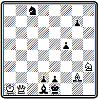
Мат в 3 хода
Не будь слона g2, белые объявили бы мат в 2 хода. Слон мешает, его надо убрать. Единственная возможность увести слона в угол 1. Са8, чтобы по освобожденной линии ферзь мог пройти тот же путь в обратном направлении,— это 2. Ф b 7 и 3. Ф h 1#. Замысел этого варианта схож с идеей Тертона, но отличается тем, что здесь сила освобождающей путь фигуры при объявлении мата не используется. Черные в состоянии защититься от угрозы, но белые находят новые пути к мату: 1... Kd 6 2. Ф b 6; 1 ... f 4 2. Ф g 6, 1 ... Кр f1 2. Ф: f 5 + (не 2. Ф b 7 e1 К!),
Задача № 000 — знаменитый "Excelsior" ("Все выше!").
№ 287
С. Лойд "Эра", 1861 г.

Мат в 5 ходов
Трудно по начальному положению предположить, что "героем" явится скромная пешка b2. Тем более замечательно и достойно удивления, какими простыми средствами это достигается: 1. b 4 (грозит 2. Л d ( f )5 с матом по первой горизонтали) 1... Лс5+ (лучший ответ; 1... Лс 6 2. Л d 5 , 1 ... Л:с2 2. К:с2, 1 ... Cg 5 2. Л f 5) 2. bc a 2 (грозило 3. Л b 1#) 3. c6 (снова грозит мат после 4. Л d ( f )5) 3... Сс7 4. cb . и, независимо от ответа черных, замурованный предыдущим ходом слона черный конь становится жертвой пешки b7, которая дает мат 5. b аФ#. Скромная белая пешка в пять ходов проделала путь от b2 до а8.
Впервые тема "эксцельсиор" была представлена в следующей задаче Лабурдоне:
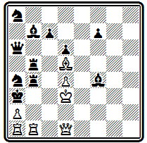
Мат в 7 ходов
1. Ф b 3+ Л: b 3+ 2. а b + Кр b 4 3. b а+ Кра5 4. ab + Кр b 6 5. b а+ Кра7 6. ab + Кр b 8 7. b аФ#.
В примере № 000 оригинально мотивировано превращение пешки в легкую фигуру.
№ 288
С. Лойд "Иллюстрейтид лондон ньюс", 1867 г.
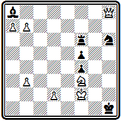
Мат в 3 хода
Белым надо уничтожить слона а8. чтобы подготовить цугцванг. После взятия слона черные смогут играть только ладьей, но зато откроется путь ферзю на а1. Казалось бы, неважно, в какую фигуру превратить пешку на а8. Но оказывается, у черных имеется ход 1... Ла6, защищающий поле a1, и даже если поставить на а8 второго ферзя, белые не смогут дать мат в 2 хода. Парадоксально, но конь на а8 в этой позиции сильнее ферзя!
После 1. ba К на 1... Ла6 решает 2. К b 6, Конь выключает ладью от поля h6, с которого грозит дать мат ферзь, а на 2... Л: b 6 матует 3. Фа1#, так как ладья закрыта пешкой b2.
Аналогичный маневр при превращении в ферзя 1. b аФ не проходил, так как после 1... Ла6 2. Фе6 взятие ферзя 2... Л:с 6 защищало от мата.
Из трех оригинальных, до того не печатавшихся композиций, входивших в посылку Лойда на Парижском конкурсе, приведем две.
Задача № 000 поражает остротой неожиданного вступительного хода.
№ 289
С. Лойд Парижский конкурс, 1867 г. II приз

Мат в 4 хода
Белые отказываются от сильнейшей батареи, уже нацеленной на короля, жертвуют слона, дают черным возможность объявлять шахи на вскрышку: 1. С:а 6 . Этот самый невероятный в данной позиции ход имеет далекую цель — поле с8, на котором надо обеспечить поддержку ферзя: 1... b а+ 2. b 7 (теперь черные снова могут объявлять шахи, но все они бесцельны) 2... Фе 6 3. Фс8; 1 ... Фс5 2. Фе8 Феб 3. Ф:с6; 1... Фс2 2. Се2 Ф:е2 3. Фс8+; 1... Кс3 2. С: b 7 Ф: b 7+ 3. Кр: b 7.
В начальном положении примера № 000 есть готовые ответы на ходы короля, но черные могут двигать пешки.
№ 290
С. Лойд Парижский конкурс, 1867 г. II приз
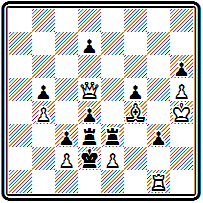
Мат в 4 хода
В главном варианте белые играют ферзем с таким расчетом, чтобы вернуться на исходную позицию после исчерпания ходов пешками и заставить двинуться короля: 1. Фа8 g 2 2. Ф g 8 d 6 3. Ф d 5 с матами 3... Кр:с2 4. Фа2# и 3... Кр:е2 4. Ф: g 2#. В варианте 1... d 6 2. Фа1 на ходы короля следуют другие ответы: 2... Кр:е(с)2 3. Ф f(b ) 1 +.
Сравнивая задачи из посылки Лойда с произведениями посылки Байера, участвовавшем в том же конкурсе и получившей 1 приз, нельзя не заключить, что красота задач Лойда превосходит трудность Байера. Задачи Байера академичны, сухи, у Лойда же пленяют искрящееся остроумие, свежесть и новизна. В этой связи уместно привести мнение одного из выдающихся шахматистов того времени Стаунтона, который в рецензии на сборник американских задач писал: "Большинство любителей шахматных задач, которые цель композиции связывают с глубиной стратегии, ставят Байера выше Лойда. Мы подозреваем, однако, что широкая публика предпочитает обратное".
В наши дни мы можем судить об этом соперничестве совершенно беспристрастно. Свершился самый объективный суд — суд времени. И он вынес решение в пользу Лойда. Вряд ли найдется сейчас шахматист самой малой квалификации, лишь начинающий постигать премудрости шахмат, который бы не слышал о Лойде и не знал хотя бы одно его произведение. С задачами же Байера большинство читателей, не принадлежащих к числу композиторов, вероятно, впервые знакомится из этой книги.
Неизгладимое впечатление производит композиция № 000.
№ 291
С. Лойд "Лейпцигер иллюстрирте цейтунг", 1869 г.
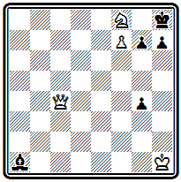
Мат в 3 хода
Лойд составил ее во время путешествия по Германии. Она была опубликована в статье И. Цукерторта, который назвал ее "бриллиантом в скромной оправе". Даже Байер отозвался о ней как о "блестящем примере глубокой стратегии". Другие, менее серьезные, критики усмотрели в проходящем красной нитью через задачу упорном преследовании слона ферзем картину настойчивой любви дамы к офицеру. 1. Ф f 1 с угрозой 2. Ф b 1, нападая на поле h7, но держа под ударом слона, чтобы иметь ответ 2... g 6 3. Ф: al #. Уход слона на b2 дела не меняет. На 1... Cc 3( d 4) ферзь нападает с другого поля: 2. Ф d 3, при 1 ... Се 5 ( f 6) решает 2. Ф f 5 с аналогичными финалами. Дополнительный вариант - 1... g 3 2. Kg 6+ hg 3. Ф h3#.
Лойд не мог, конечно, пройти мимо знаменитой "индийской задачи". Одна из его вариаций на эту тему приведена на диаграмме № 000.
№ 292
С. Лойд Филадельфийский конкурс, 1876 г. II приз
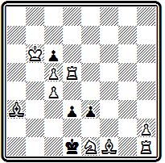
Мат в 4 хода
В главном варианте 1. Л d 8 d 2 2 . Ch 3 е2 3. Cd 7 de 4. Cf 5# выключение белой фигуры на критическом пате приводит к развязыванию черной пешки.
В кратком очерке, понятно, невозможно охарактеризовать все многообразие идей творчества Лойда, Бьющая через край фантазия и искрящийся юмор выражались и шахматными средствами, в оригинальных ситуациях, развертывающихся на доске, и занимательными историями, связанными с той или иной задачей, и остроумными девизами, которыми Лойд часто снабжал свои произведения. Собрание задач Лойда, любовно подобранных и изданных А. Уайтом (55), представляет для любителя шахмат неисчерпаемый источник удовольствия. В текущем году сборник избранных композиций Лойда впервые вышел на русском языке (автор , 56).
В 1878 г. Лойд выпустил большую работу, назвав ее "Шахматная стратегия" (57). Это очень интересная книга о шахматной композиции, написанная в форме непринужденных бесед с читателем на самые различные темы, связанные с задачами. Книга иллюстрирована большим количеством — более полутысячи — произведений автора. Лойд затрагивает весьма широкий круг вопросов, относящихся и к технике, и к самому существу, идейному богатству задачи. Книга Лойда появилась раньше других книг по теории композиции, которым предстояло выйти в европейских странах в течение ближайших десяти лет. Лойд не пытался формулировать какие-то нормы, правила составления задач. Всякая канонизация неизбежно означает ограничение, а это органически чуждо Лойду. Он не примыкал ни к какой определенной школе, оставляя за собой свободу работать в любом направлении. На всем протяжении творческой деятельности Лойда, а длилась она свыше полувека, его неизменно занимала одна мысль: яркость и неожиданность замысла.
Кто, кроме Лойда, осмелился бы выступить в конце XIX века с задачей, подобной его двухходовке № 000?
№ 293
С. Лойд "Нью-Йорк санди гералд", 1889 г.
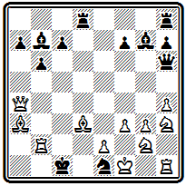
Мат в 2 хода
Слон покидает сильнейшую позицию, оставляя беззащитной ладью, проделывает длиннейший путь, чтобы стать в засаду за вражеского слона:
1. Сf8 С:b2 2. С:h6#. Эта идея, названная американо-индийской, разрабатывалась многими авторами, которые соревновались в наиболее экономичном ее представлении. Сам Лойд повторил ее через три года в другом, фронтальном, механизме. Но ни в одной из этих композиций не удалось достичь того поразительного эффекта, который производит первое произведение Лойда.
Задача № 000 является достойным завершающим аккордом всего творчества Лойда.
№ 294
С. Лойд "Чекмейт", 1903 г. I приз
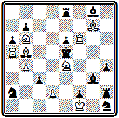
Мат в 3 хода
Нельзя не согласиться с тем, что эта задача является "самым колоссальным трюком всех времен". Действительно, кому придет в голову, решая задачу, покинуть королем надежное укрытие и пуститься в отчаянное плавание навстречу опасностям и угрозам. Но Лойд делает это! 1. Кре2— черным предоставляется возможность превратить пешку в ферзя и объявить двойной шах, от которого, казалось бы, нет спасения: 1... f 1Ф+ 2. Кре3 — наперекор стихиям король идет к заветной цели! Черные могут объявить множество разнообразных шахов, но они не в силах предотвратить мат одной из белых батарей. Если черные, убедившись в беспомощности ферзя, попытаются превратить пешку в коня 1... f 1К+ то их ждет ответ 2. Л f 2+. Задача имела девиз "Гамбит Стейница". Характеризующий этот гамбит ход короля— 1.с4 е5 2. Кс3 Кс6 3. f 4 ef 4. d 4 Ф h 4+ 5. Кре2— совпадает с первым ходом решения задачи.
Новый подъем в развитии задачной композиции в США наступает около 1870 г. В этом году возникает новый шахматный журнал "Дюбук чесс джорнэл", уделявший большое внимание композиции и регулярно проводивший конкурсы составления задач. В том же году начинает свой творческий путь замечательный американский композитор В. Шинкман. который явился сподвижником и продолжателем Лойда.
Период наибольшей активности у Лойда закончился в I860 г. Теперь, в 70-е годы, Шинкман стал более ревностным пропагандистом лойдовских идеи, чем даже сам Лойд.
Творческие воззрения этих двух композиторов полностью совпадали. О. Вюрцбург в предисловии к сборнику задач Шинкмана, выпушенному Уайтом в 1929 г. (58), писал: "Я не знаю двух композиторов, которые бы так походили друг на друга. Их взгляды были абсолютно одинаковыми".
Это единство как бы нашло символическое выражение в том, что оба автора независимо и в одно время составили композицию № 000, посланную ими в составе своих посылок на одни и тот же конкурс, который был проведен в связи с III Американским шахматным конгрессом в Филадельфии в 1876 г., приуроченным к празднованию столетии Американской революции.
№ 000
С. Лойд и В. Шинкман Филадельфийский конкурс, 1876 г.

Мат в 3 хода
Единственное различие заключалось в том, что у Лойда первый ход 1. Фс3 делался не с bЗ, а с d2, причем у черного короля отнималось поле f3, но зато ему одновременно предоставлялись два других поля. Основные варианты: 1... Kpf4 2. Kd2; 1... Kpd5 2. Л d2+; 1... Kf2 2. Фе 5+; 1... Kg3 2. Ф d4+; 1... h5 2. Kg 5+.
Конечно, между Лойдом и Шинкманом были и различия. Лойд начал работать на заре современной композиции, перед ним лежало нераспаханное поле задачной тематики, и он черпал из него идеи, если можно так выразиться, шутя и играючи. Шинкман творил позже, ему труднее было быть таким же оригинальным, но зато он имел большое преимущество в технике, Шинкман иногда возвращается к идеям Лойда и реализует их во всеоружии опыта.
Примером может служить задача № 000, в которой получает дальнейшее развитие идея одновременного нападения.
№ 000
В. Шинкман "Детройт фри пресс", 1882 г.
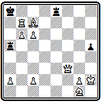
Мат в 3 хода
Здесь белый ферзь атакует сразу две черные ладьи, привязанные к защите полей а7 и b8. После 1. Kph1 черные в цугцванге: 1... Ла 6 2. Фе2; 1... Ла4 2. Ф e 4; 1... Л:а2 2. Ф f 7; 1... Лс8 2. Ф f 5; 1... Л d 8 2. Ф d 5; 1 ... Л h8 2. Фс 3 ; 1 ... h 4 2. Ф h 5.
Шинкмана, как и Лойда, отличало необычайное многообразие. Он почти никогда не повторялся. В каждой его задаче находится что-то новое, а ведь его творческое наследие насчитывает свыше 3000 произведений!
Задача № 000 иллюстрирует излюбленный прием Шинкмана при построении первого хода.
№ 000
В. Шинкман "Дейче шахцейтунг", 1875 г.
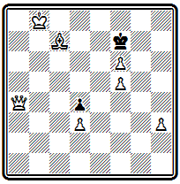
Мат в 3 хода
Казалось бы, что может быть естественнее и сильнее, чем прямая атака на короля 1. Ф d 7+? Однако после 1... Кр: f 6 приходится отрезать королю пути бегства, и 2. Cf 4 ведет к пату. Ферзь действительно должен попасть на седьмую горизонталь, но гораздо более "деликатным" способом: 1. Фа7. Теперь в случае 1... Кр: f 6 ход 2. Cf 4 достигает цели (2... Кр: f 5 3. Ф f 7 #), а при других отходах решает 2. Cd 6.
Шинкман очень любил построение эхо-вариантов. Вот красивый пример № 000,
№ 000
В. Шинкман "Хаддерсфилд колледж мэгезин", 1880 г.
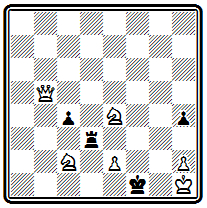
Мат в 3 хода
После 1. e 3 черные в цугцванге. На безразличный уход черной ладьи следует 2. Ф:с4+. Ладья предупреждает эту угрозу зашитой полей с4 или е2. Тогда получаются две пары картинных эхо-вариантов с правильными матами: 1... Л : е 3 2. Ф b1+ Кре 2 3. Kd4#; 1... Л d2 2. Ф f 5+ Кре2 3. Кс3#; 1... Л d 4 2. К: d 4 Kpe 1 3. Ф b 1#; 1... Лс3 2. К:с3 Кр f 2 3. Ф f 5 #. Дополнительные варианты: 1... Кре2 2. Ф h 5+ и 1... h 3 2. Kg 3 + .
Несложное построение и нетрудное решение имеет задача № 000, но замысел ее очень остроумен.
№ 000
В. Шинкман "Миррор оф америкэн спортс", 1885 г.
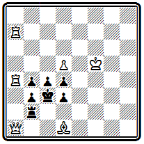
Мат в 4 хода
Черные беспомощны, у них остались лишь два хода пешками "d", однако белым не просто использовать свое преимущество. Напрашивается мат ферзем по диагонали h8-c3, но как туда попасть, если ферзь загорожен собственными фигурами? Две ладьи должны услужливо проложить ему путь:
1. Л h 7 d 2 2. Ла8 d 3 3. Фа7 и 4. Ф g 7 #. Последовательно дважды проведенное освобождение линий.
И снова пример иного рода — миниатюра № 000 с несколькими правильными матами и тихими вариантами:
№ 000
В. Шинкман "Сент-Джонс илоб", 1890 г. I приз
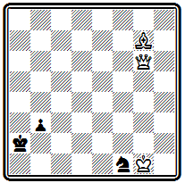
Мат в 3 хода
1. Фd6 b2 2. Ф b 4 b 1Ф 3. Фа4# или 2... К~ 3. Ф: b 2#; 1... К~ 2. Ф d 2+ Кра3 3. Фа5#; 1... Ке3 2. Фе5 Кр b 1 3. Ф b 2 # .
Проблему № 000 сам Шинкман комментировал так: "Здесь нова и курьезна сама принципиальная основа задачи. На каждом шагу решения необходимо делать чисто выжидательные ходы; это вызывает необходимость первого хода пешкой — в противном случае черные возьмут эту пешку и белые сами могут оказаться без хода.
№ 000
В. Шинкман "Америкэн чесс мэгезин", 1898 г.
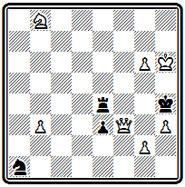
Мат в 4 хода
Например: 1 . Ке 6 К: b З 2. Ке7 Kd 4, и мата не видно". После 1. b 4 может ходить только конь. Ладья привязана к защите полей g4 и е3 (1... Л: b 4 2. Ф:е3 Л g 4 3. hg). Однако и ходы коня недостаточны: 1... К b3 (с2 ) 2. К c6 Kd 4 3. Ке7, и черные вынуждены снять удар с одного из обороняемых полей. Важно подчеркнуть, что конь перекрыл черную ладью по четвертой горизонтали и лишил ее возможности сыграть, скажем, на b4, что теперь спасало бы от мата.
Большое внимание Шинкман уделял многоходовкам. Будь в начальном положении задачи № 000 ход черных, мат достигался бы в 4 хода.
Но выжидательного хода у белых нет, и они вступают своим королем в единоборство со слоном черных с целью выиграть необходимый темп:
№ 000
В. Шинкман "Детройт фри пресс", 1881 г.
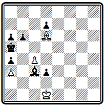
Мат в 12 хода
1. Kpc 1 Ce 1 (1... d 2+ 2. Kpd 1 и З. С b 4# или 3. Сс7 # ) 2. Kpb 2 Cd 2 3. Кра2 Ce 1 4. Kpa 1 Cc 3+ 5. Кр b 1 Cd 2 6. Kpb 2 Ce 1 7. Kpc 1 Сс3 8. Kpd 1 (снова создалась начальная позиция, но с ходом черных) 8... d 2 9. Крс(е)2 d1Ф+ 10. Kp : d 1 Cd 2( e1 ) 11. Kp : C b5 12. Cc 7 # .
Известным американским композитором являлся Д. Денсмор. Хотя он и не обладал широтой и яркостью таланта своего тестя — знаменитого Лойда, но стиль его был довольно своеобразен и самобытен. Расцвет творчества Денсмора относится к XX веку. Из работ раннего периода приведем его композицию № 000
№ 000
Д. Денсмор (до 1890 г.)
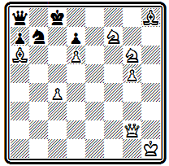
Мат в 3 хода
Идея ее — в освобождении главной диагонали для ферзя встречным движением слона: 1. Ca1 Кр b 8 2. Ф b 2 Крс8 3. Ф h 8 # .
Значительных успехов достиг Отто Вюрцбург, племянник Шинкмана. Опубликовав первое произведение в 1887 г., когда ему было всего лишь 12 лет, Вюрцбург быстро выдвинулся в число ведущих американских проблемистов.
Уже с первых шагов он нашел свой собственный стиль, которого держался во всем последующем творчестве, Он любил работать с ограниченным материалом. Обычно в его задачах у белых, кроме короля, только ферзь и одна-две фигуры без пешек. И в этот ограниченный и довольно трудный для обработки материал ему удавалось вкладывать столь разнообразное содержание, что его по праву следует отнести к последователям Лойда.
Знаменитая задача № 000 является классической иллюстрацией темы Тертона -
№ 000
О. Вюрцбург "Дейче шахцейтунг", 1895 г.
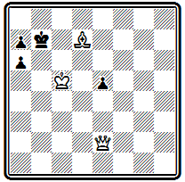
Мат в 3 хода
Ходом 1. С h 3 белые освобождают путь своему ферзю, угрожая 2. Фg4. Это проходит и при 1. Kpc 7, когда белый ферзь при поддержке слона дает два правильных мата: 2... Кр b 8 3. Фс8 # и 2... Kpd 8 3. Ф d 7 #. Очень красив и эффектен дополнительный вариант с жертвой ферзя 1... а5 2. Фа6+ Кр:а 6 3. Сс8 #, также заканчивающийся правильным матом.
Композиция № 000 представляет собой новую вариацию на тему одновременного нападения.
№ 000
О. Вюрцбург "Америкэн чесс мэгезин", 1899 г.
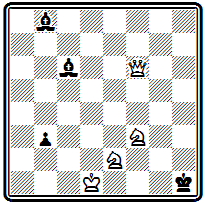
Мат в 3 хода
После 1. Ke 1 грозит 2. Ф h 6+ Ch 2 3. Ф:с6#. Надо уходить слоном с6. В зависимости от отступления белые используют одну из возможностей одновременного нападения. В случае 1... Се4 и 1... Са8 повторяется механизм угрозы, только ферзь шахует с других полей (соответственно 2. Ф h 4+ и 2. Ф h 8+). При иных отступлениях слона одновременное нападение ферзя на того же слона осуществляется другим образом: 1... С b 7 2. Ф b6 , 1... Cd 5 2. Ф d 4 и 1... Cg 2 2. Ф f 2, во всех случаях с матом 3. Ф g 1#. На 2... Са7 следует мат ферзем по вертикали "h", а на 2... Ch 2 — мат со взятием слона по главной диагонали, используя блокирование поля h2.
Пример № 000 содержит два красивых эхо-мата при положении черного короли на полях разного цвета:
№ 000
О. Вюрцбург "Тийдскрифт", 1900 г.
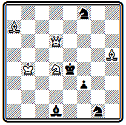
Мат в 3 хода
1. Cg 4 f 2 2. Cf 5+ Кре3 3. Ф h 6# —правильный диагональный мат, черный король стоит на черном поле; 1... Кре3 2. К: f 3+ Кре2 3. Фа6# —такой же правильный диагональный мат ферзем с точным повторением расположения остальных белых фигур относительно черного короля, но вся матовая картина зеркально отразилась относительно вертикали "е" и опустилась на один ряд вниз, черный король стоит уже на белом поле. Есть в задаче и третий правильный мат: 1... Ке2 2. К:е2 f е 3. Ф d 4 # . Угроза 2. К b3 .
Шинкман, Вюрцбург и Денсмор — вот, собственно, и все непосредственные последователи лойдовского стиля.
Следовать Лойду было очень и очень трудно, для этого надо было обладать значительной долей его таланта. Авторы указанной выше работы по истории американской композиции прямо пишут: "Принципы Лойда, . . не смогли явиться объединяющим руководящим началом. Американские проблемисты все более и более понимали, что их надежды на успех в европейских конкурсах заключаются только в исполнении роли второй скрипки за зарубежными мастерами; во многих отношениях это было легче, чем следовать прямо по стопам Лойда". Этот приговор, конечно, излишне суров. Американские проблемисты не просто следовали за европейскими мастерами, но и занялись изысканием новых путей.
В области трехходовки, во всяком случае в пределах XIX века, эти поиски больших успехов не дали. Американские авторы пытались, например, разрабатывать задачи с правильными матами. В примере № 000 вступление
№ 000
В. Мередит " Дюбук чесс джориэл", 1871 г. I I приз
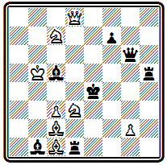
Мат в 3 хода
1. Ф d 6 создает угрозы мата 2. Ф f 4# и жертвы ферзя на е5—2. Фе5+ Л:е5 3. К:с5#. Шахи белому королю не защищают от второй угрозы, и приходится брать ферзя: 1... С: d 6+ 2. Кс5+ Кре5 3. Kd 7 # или 1 ... Ф: d 6 2. Kf 2+ Kpe 5 3. Kg 4 # . В обоих случаях проходят правильные маты с использованием блокирования поля d6.
Работали проблемисты США и в области трехходовки без правильных матов. Иллюстрацией может служить задача № 000.
№ 000
Д. Уэйнрайт " Миррор оф америкэн спортс", 1885 г. I приз
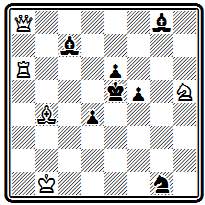
Мат в 3 хода
После хода 1. Лс6, предоставляющего черному королю два свободных поля, грозит 2. Лc5+ Kpd6 3. Л d 5#. Это же проходит и на 1... Kpd 5. На 1... Кре4 следует 2. Л:е6+ Kpd 3 3. Фа6#. Наиболее тонкий вариант получается при защите черных разблокированием поля с7. На 1... Сс~ решает просто 2. Cd 6+, на 1... С b 8, сохраняющее защиту поля d6,— отступление ладьи 2. Л b 6 с угрозой 3 . Л b 5 # и матами слоном 2 ... Са7 3. Cd 6 # и 2... d 3 3. Сс 3# .
Зато в области двухходовки американские композиторы в результате большой систематической работы открыли богатейшую жилу не изведанных ранее идей.
Во вступительной статье к книге "Век двухходовки" (59) Уайт устанавливает пять периодов развития современной двухходовки, из которых два относятся к XIX веку. В течение первого периода, начинающегося с д'Орвилля и кончающегося 1875 г., постепенно вытесняются комбинации с жертвами и форсированной игрой. Именно в эти годы значительное внимание двухходовке уделял Лойд, хотя он и считал эту форму недостаточно интересной.
Второй период, охватывающий последнюю четверть XIX века, характеризуется появлением новых тенденций, идей и критериев, в результате которых, по словам Уайта, двухходовые задачи все более отдаляются от шахматной игры. Главную роль в данном процессе играли английские и американские проблемисты,
В начале второго периода весьма популярны были двухходовки с игрой черного короля, которому предоставлялась относительная свобода.
В задаче № 000 королю доступны все четыре фронтальных поля.
№ 000
В. Шинкман "Лебонон гералдс", 1877 г. I приз
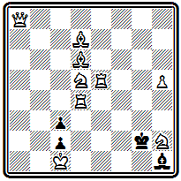
Мат в 2 хода
В такой позиции угрозы создать нельзя, дать мат невозможно. Однако вынужденный из-за цугцванга покинуть это убежище, король незамедлительно получает мат: 1. Фа7 Кр g 3 2. Ле2# и 1... Кр: h 2 2. Лg5#, аналогично другой батареей 1... Kpf 2 2. Лg4# и 1... Kpg1 2. Ла2 #.
В том же духе композиция № 000 — черных фигур мало, борьба идет со свободным королем.
№ 000
Д. Карпентер "Дюбук чесс джориэл", 1871 г. I приз
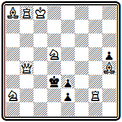
Мат в 2 хода
Блестящий первый ход 1. Ф d 6 предоставляет королю в добавление к имевшемуся в начальном положении еще четыре свободных поля. Отступления короля приводят к четырем ответам белого коня: 1... Крс4(с2) 2. К:е3#; 1... Кр d 4(е1Ф) 2. К b6# ; 1 ... Кре4 2. Ке7 # ; 1 ... Kpd 2 2. К b 4 #. Очень красиво построение, выполненное экономично, без белых пешек.
Интересны проблемы Г. Бордмана, добившегося успехов уже в 12-летнем возрасте. В задаче № 000 есть любопытные тонкости.
№ 000
Г. Бордман "Холиок трэнскрипт", 1881 г. I приз
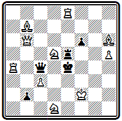
Мат в 2 хода
После 1. Ф b 5 Ф b (:а)4 включение белого ферзя на d3 позволяет матовать батареей, для чего надо отнять конем другое свободное поле f5. Однако выполняется это только путем 2. К5е3#, так как другой ход, также отнимающий это поле,—2. Ке7, не проходит из-за развязывания черной ладьи е5. Аналогично на 1... f 5 (Л~) годится лишь 2. К f 4#, но не 2. К b 4? Далекий предшественник современных комбинаций в попытках.
Пример № 000 типичен для английского стиля
№ 000
Г. Бордман Филадельфийский конкурс, 1876 г. II приз
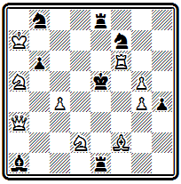
Мат в 2 хода
На доске обилие черных фигур, обладающих большой свободой и создающих в результате цугцванга многочисленные варианты.
Мотивы, делающие возможными маты после ходов черных, еще весьма элементарны, в подавляющем большинстве это простое отвлечение:
1. Cg 1 Ле2 2. Ф: a 1#, 1... К b ~ 2. Кс6# и т. д. Только три мата, из общего числа 14, осуществляются с использованием момента блокирования: 1... Ле6 2. Л f 5 # , 1 ... Ле4 2. Кf3 # и 1... Сd4 2. Ch 2 # .
Весьма близка к рассмотренной по механизму позиция № 000.
№ 000
Д. Никс "Дизайн энд уорк", 1881 г. II приз
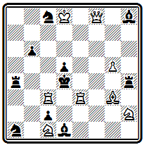
Мат в 2 хода
Расположение основных действующих сил — белого ферзя и черных ладьей - относительно короля одинаково, совпадают и многие варианты. Однако имеются и различия, и притом настолько существенные, что судьи, несмотря на наличие такого близкого предшественника, сочли возможным отметить задачу высоким отличием. Игра добавленного черного слона d1 создает два интересных варианта с перекрытием черной ладьи: 1. Cc 7 Cg 4 2. Ф f 4 # и 1... Ch5 2. Ф: h 8 #. Получающиеся в этих вариантах маты не новы. Они проходили как в первой задаче, так и в самой второй при игре ладьей, однако новой является идейная мотивировка возможности их появления при ходе слона.
Задача № 000 выделяется красивым и трудным первым ходом
№ 000
В. Мередит " Дюбук чесс джориэл", 1889 г. I приз
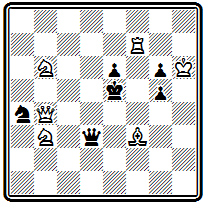
Мат в 2 хода
1. Ф d 2, уводящим белого ферзя с активной позиции в засаду. Основные варианты: 1... Kpd6 2. Кс 4#; 1... Ф :b3 2. Kd7#; 1... Ф :f3 2. Фd4#; 1... Ф: d 2 2. Кс4#; угроза 2. Ф h 2 # .
Автор этого произведения В. Мередит обычно строил задачи с ограниченным материалом. В честь него двухходовки, в которых общее число участвующих фигур не превосходит 12, стали называть "мередитами". Сборник его 100 задач вышел в 1916 г. (60).
Американские композиторы раньше других обратили внимание на тактические идеи, заключающиеся в ходах черных фигур, и начали их активно разрабатывать в двухходовой форме. В первую очередь это относится к идее перекрытия. В трех следующих иллюстрациях указанный тактический момент является основой авторского замысла.
В примере № 000 мотив перекрытия черных фигур пронизывает все решение.
№ 000
Д. Уэйнрайт "Вандерер ", 1886 г. I приз
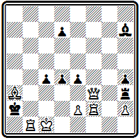
Мат в 2 хода
Первый ход 1. Cd 6, создающий угрозу 2. e 3#, одновременно перекрывает пешку d7, чтобы лишить черных возможности защищаться в варианте 1... с3 2. Ф f 7#, где белые, как и при 1... е3 2. Фа8#, пользуются перекрытием черной ладьи h3. В варианте 1... ef 2. е4# белые сами на матующем ходе выключают черного слона h7. В разветвлениях 1... d 3 2. ed # и 1... Л: f 3 2. ef # белая пешка е2 дает еще два мата. Она проявляет максимальную активность.
В проблеме № 000 идея перекрытия осложняется тонкими нюансами.
№ 000
Г. и Э. Бетманы "Нашвилл америкэн", 1887 г. II приз

Мат в 2 хода
Перекрывается здесь связанный черный ферзь, а использует перекрытие сам белый король: 1. Лес2 Се3 2. Кре2# и 1... Се5 2. Кре3#.
Три брата Бетман — Джекоб, Эдгар и Генри — были одними из самых активных американских составителей двухходовок в конце XIX века, особенно последний, который продолжал работать и имел успехи до 20-х годов нынешнего столетия.
Авторы задачи № 000 стремились выразить идею перекрытия в наиболее полном виде.
№ 000
Г. и Э. Бетманы "Сент-Джонс глоб", 1888 г. I приз
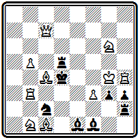
Мат в 2 хода
Здесь черная ладья h2 четырежды перекрывает слонов: 1. Ка 3 Л g2 2. Кр :h3#; 1... Л f2 2. Kp:g3#; 1... Ле2 2. Л d3# ; 1 ... Лd2 2. С b 2#. Черные слоны, становясь на поля второй горизонтали, в свою очередь перекрывают ладью, что ведет к 2. К:с2 #. Эта композиция показательна в том отношении, что ради максимального представления идеи авторы отступают от одного из основных требований английской школы—отсутствия дуален. Здесь дуали есть в варианте 1... C g 2 и при уходе ладьи d5 с пятой горизонтали. Некоторое ослабление формальных требований вообще характеризует американскую двухходовку конца XIX века в отличие от ортодоксальной английской школы.
Намного опередила свое время задача № 000, воплощающая в весьма полном виде и хорошей форме идею развязывания белых фигур.
№ 000
О. Вюрцбург "Филадельфиа телефон", 1892 г.
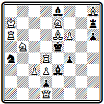
Мат в 2 хода
Интересно и то, что автор отказывается от характерной для английской школы формы цугцванга и строит задачу на угрозу. После 1. С h 3 грозит 2. Ле6#. В вариантах 1... Cd 7 2. Kg 6# и 1... Cf 7 2. Кс6# черные развязывают белого слона, а в разветвлениях 1 ... К b 6 2. Ле4 # и 1... Кс5 2. Лd5 # —белую ладью. Новое в последних композициях заключается в том, что в них основу замысла и содержания составляют тактические идеи, представляемые в ряде параллельных вариантов. Открытие возможности такого построения задач составляет заслугу американских проблемистов, которые проложили путь к быстрому овладению идейным богатством современной двухходовки к началу XX века заняли ведущее положение в данной области. Это открытие оказало значительное влияние на весь дальнейший ход развития двухходовки, в частности на творчество самих английских композиторов.